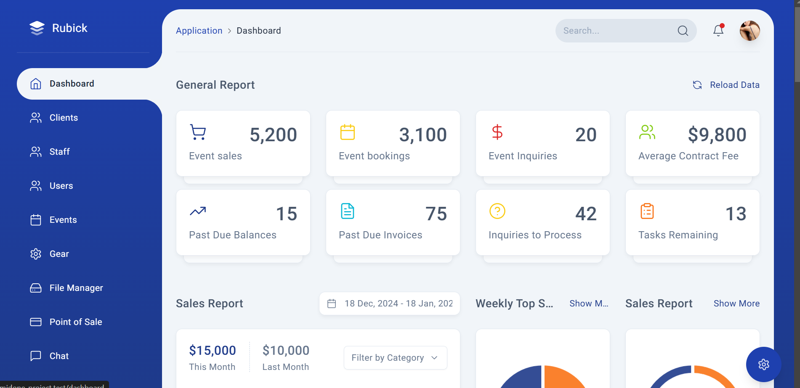

A glimpse into my experience as a Junior Developer at Digitera
An inside look into my journey and growth as a developer. Picture of my App below
My name is Brandon Zhong, and this page covers my journey as a Junior Developer at Digitera. I’ll share everything from the skills I developed before starting my placement to the daily tasks I performed and my key takeaways. This reflection encompasses my experiences from the summer before the placement to the near end of the semester.
At Digitera, I spent most of the semester designing a demo DJ Event Planner from scratch using the Laravel framework. I worked as a full-stack developer, primarily focusing on backend development with PHP. My co-op placement was entirely virtual, allowing me to work remotely from home or school.
What did I have to do before the placement?
In late May, I expressed interest in being placed at Digitera for the upcoming school year. Digitera required candidates to showcase a personal summer project as proof of their skills and readiness for the role. To meet this requirement, I developed a project using the Laravel framework over the summer, which helped secure my placement.
I created an e-commerce store using the Laravel framework. The app allowed users to place orders and post products they wanted to sell. It featured a functional database for users, orders, shippers, and products. Completing this project in about two months was instrumental in securing my placement at Digitera.
At the start of my placement, I assisted my supervisor with a WordPress project, tweaking and updating a website for about a week and a half. After that, I began the DJ Event Planner project. My initial tasks involved researching existing DJ planners like VIBO and Cue to understand their functionality. Once my research was complete, I set up the project, selected a template, and organized my files for local development.
Midway through the semester, I focused on implementing features for the DJ Event Planner. I took a step-by-step approach, adding new features weekly. For example, during the first week, I developed a role-based hierarchy system that assigned permissions to users based on their roles. I then moved on to designing and building the dashboard.
By the end of the semester, I had implemented several features in the app. While I wasn’t expected to complete the entire project, my work established a solid foundation for future co-op students to build upon, adding new features and refining the codebase.
Each morning, I checked Slack to review updates from my supervisor or responses to any questions I had asked the previous day.
In the afternoon, during my placement hours, I worked in the school library or at home if the library was closed. This was when I focused on developing features for the app.
After school, I dedicated time to fixing bugs or developing additional features for the app if I had free time.
The DJ Event Planner app is designed to simplify event planning for prom comities, offering a seamless experience with easy-to-use features. Built with the Laravel framework, it combines robust backend functionality with an intuitive frontend interface.
Throughout my co-op placement, I learned the importance of time management, self-motivation, and staying adaptable in a remote work environment. The ability to balance work responsibilities with school commitments taught me valuable skills that I will carry forward in my career.